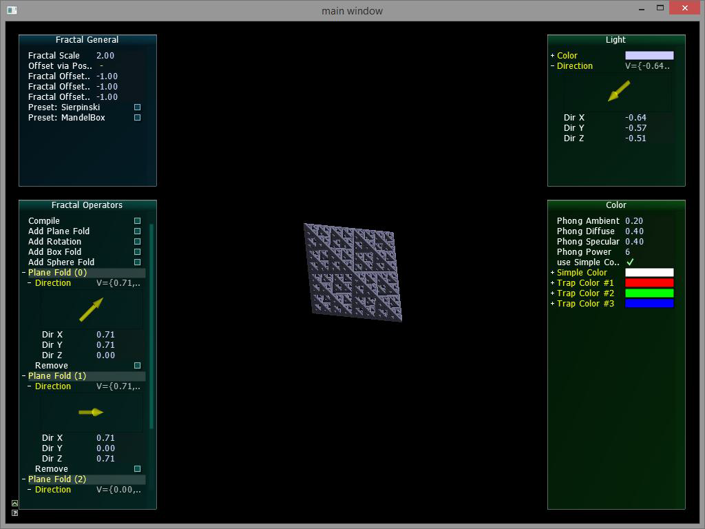
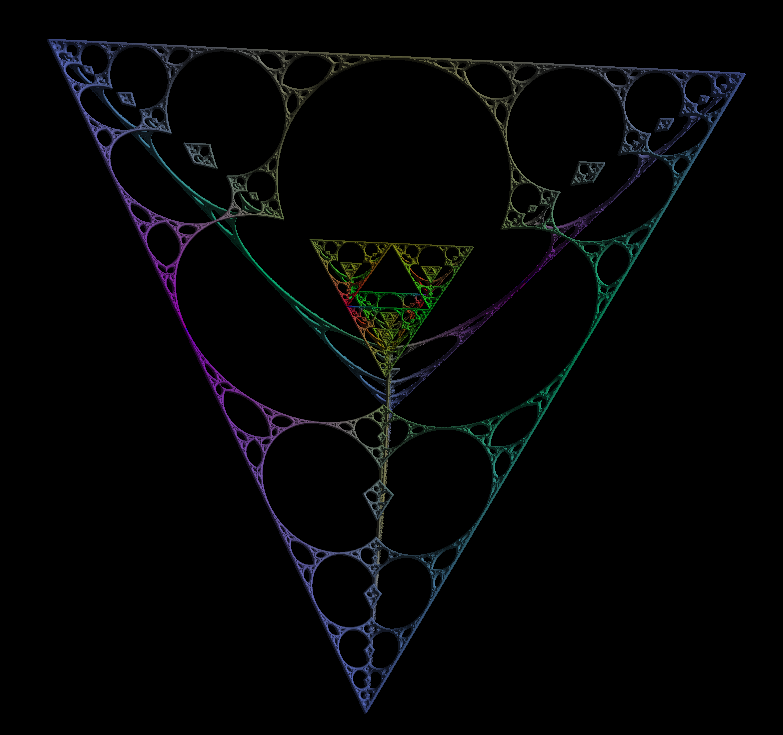
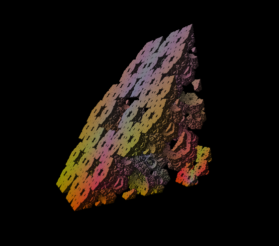

A project by Clemens Rögner
Fracaleido is a real-time fractal renderer written in DirectX 11. It is designed for editing so called 'Kaleidoscopic Fractals' with an intuitive GUI. This allows for novice users to explore and discover new fractals.
The fractals are described via distance estimator, which transforms the position at hand with the operations of the specific fractal and approximates the distance accordingly. This is repeated with every iteration until a limit is reached. The following operations are possible in Fracaleido:
Due to better performance Fracaleido uses ray marching to generate the image. A mesh or voxel representation is simply too expensive to compute for real-time rendering.
To get a user defined fractal formula onto the GPU, the plain text of a shader code is altered so it contains the operations and the according data buffers. This may not be the most elegant way but does the job quite well.
The GUI of Fracaleido is accomplished via AntTweakbar which features easy to ingrate CG-related controls. In Fracaleido you can also change the color and light direction of the fractal with a view clicks. The usage of an so called 'Orbital Trap' to color a fractal is also possible.
You can download Fracaleido here which includes source code and documentation. There is also a technical description, which contains more details on the workings of the application, and a user guide
Here is a screenshot of the application:

